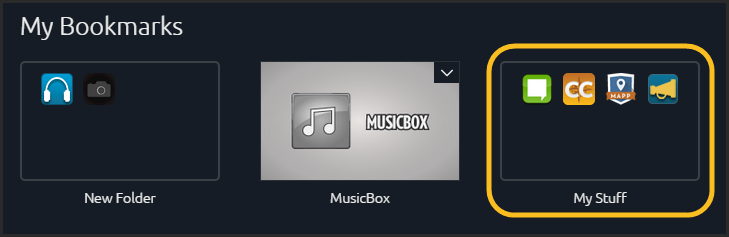

HUD is a repository for all listings that you bookmark in Marketplace. From HUD, you can quickly find, launch or get help relating to each listing. Also, you can remove the bookmarked listing.
You can access HUD two ways using the Global Toolbar:
Click the  icon on the upper-left side of the toolbar or click the icon on the far-right side of the toolbar, then select Bookmarks:
icon on the upper-left side of the toolbar or click the icon on the far-right side of the toolbar, then select Bookmarks: 
Accessing HUD from the Global Toolbar
From HUD you can open, get help or remove bookmarks for a listing. Each action is found under the drop-down listing menu:

Drop-down listing actions menu
This section describes listing commands--accessible from the drop-down arrow on the right side of the listing:
Like a smart phone, the HUD supports folders.

To make a folder:
As shown in the image above, your first folder defaults to the name "New Folder." To change a folder name:
To remove a listing from a folder: